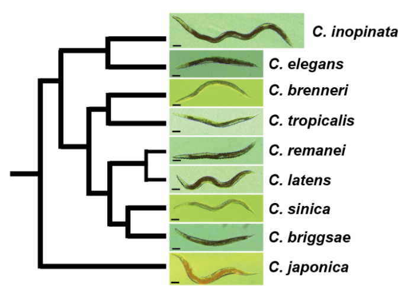
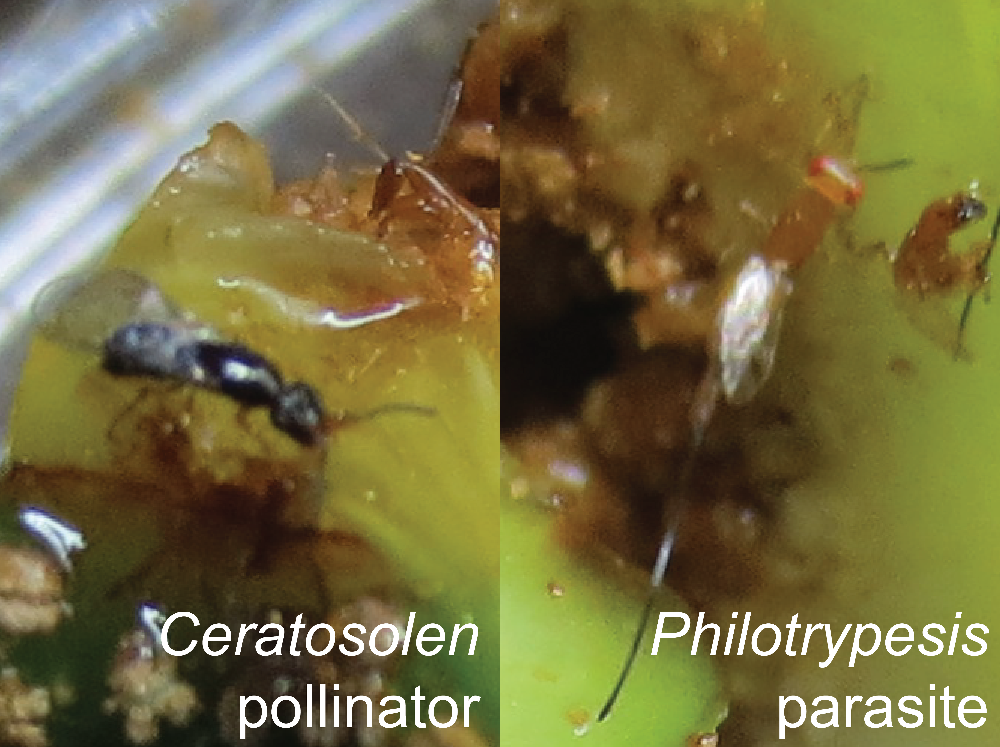
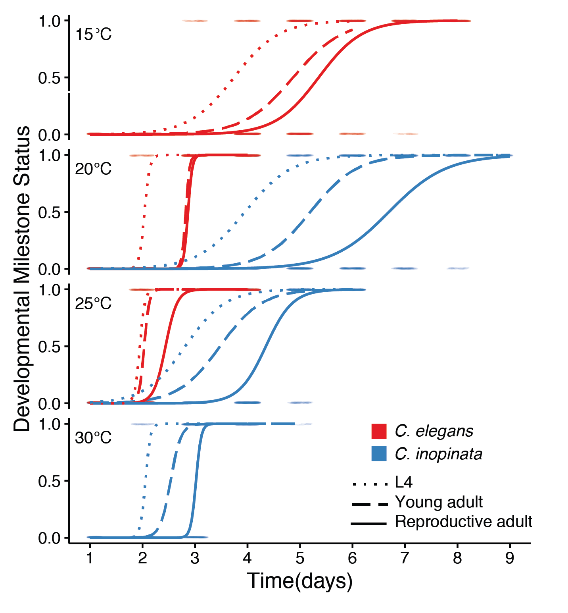
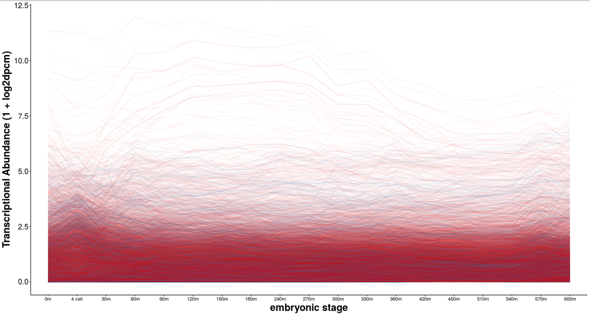
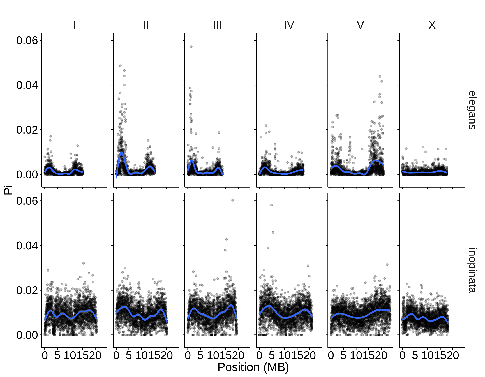
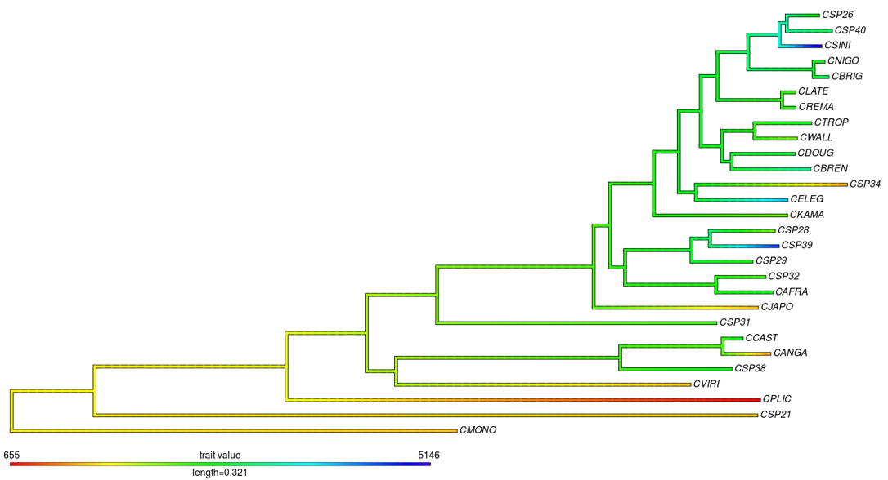
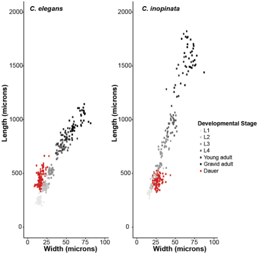
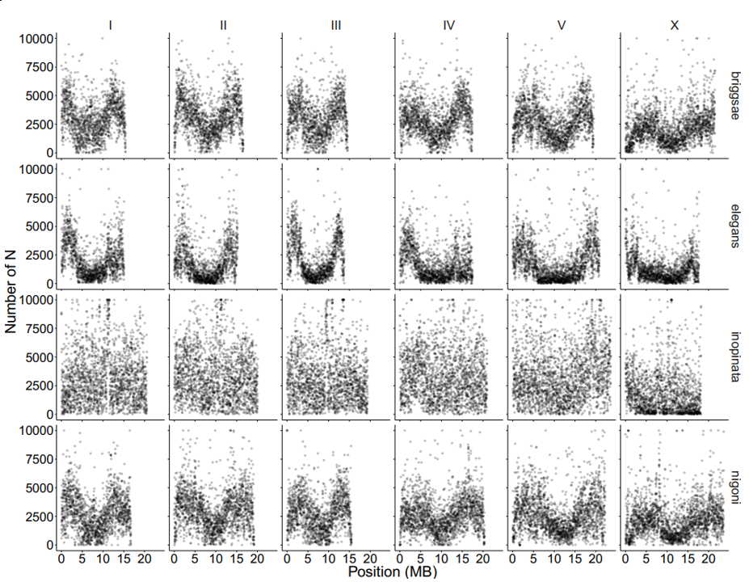
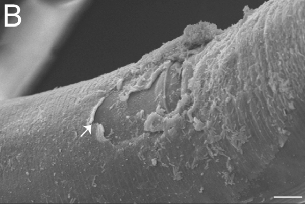

What are the causes of morphological change?
 What is the genetic, cellular, developmental, and evolutionary basis of phenotypic diversity? This question can be addressed from many perspectives— molecular geneticists, developmental biologists, population geneticists and ecologists have typically tackled these problems using very different approaches. However, as phenotype construction has multiple causes, a satisfying understanding of phenotypic diversity ultimately requires the integration of multiple points of view. I am currently using the nematode Caenorhabditis inopinata to connect functional genetics with evolution and ecology to understand the causes of phenotypic diversity. C. inopinata can grow to be nearly twice as long as its close relatives, which include the highly-studied model organism, C. elegans. Furthermore, it thrives in the fresh Ficus septica figs of Okinawa and is associtead with its pollinating wasps; figs and fig wasps together represent a classic system in evolution and ecology. C. inopinata is then well-positioned to connect multiple disciplines that aim to understand the bases of phenotypic variation. To this end, I am continuing to harness genomic, evolutionary, and developmental genetic approaches to address these questions using this system.
What genes underlie developmental and morphological divergence?
 C. inopinata is large and slow-developing, and some of the earliest and most widely studied mutants in C. elegans affect body size and the timing of developmental events. Could changes in these genes underlie heterochrony and body size evolution? In addition to interrogating these obvious candidate genes, I am using genome-wide phylogenetic and molecular evolution approaches to discover potential genetic drivers of developmental change. Because of the context of the C. elegans system, these candidates can then be directly tested with conventional developmental genetic experiments.
C. inopinata is large and slow-developing, and some of the earliest and most widely studied mutants in C. elegans affect body size and the timing of developmental events. Could changes in these genes underlie heterochrony and body size evolution? In addition to interrogating these obvious candidate genes, I am using genome-wide phylogenetic and molecular evolution approaches to discover potential genetic drivers of developmental change. Because of the context of the C. elegans system, these candidates can then be directly tested with conventional developmental genetic experiments.
What ecological factors drive evolutionary change?
 The environment propels adaptation. C. elegans and most Caenorhabditis species thrive on rotting plants, whereas C. inopinata grows in fresh figs. Clearly its radically different environment has influenced its phenotypic divergence, but how? We have recently defined the natural history of this species to generate hypotheses regarding the ecological drivers of divergence. For instance, C. inopinata shows a dispersal preference for pollinating wasps over parasititc wasps— how does fig wasp diversity impact C. inopinata fitness? Future field work interrogating patterns of microbial, nematode, and fig wasp diversity will be connected with laboratory experiments in order to understand the causes of species distributions.
What are the life history consequences of body size change?
 Organisms appear to adopt life history strategies where patterns of reproduction, growth, and body size covary. C. inopinata is huge in size and grows much slower than its close relatives. Are these traits meaningfully connected in C. inopinata, and can this system be used to understand how life history traits evolve? We have recently described the life history traits of this species and showed that lifespan is not extended in this large, slow-developing species. We are eager to implement both quantitative genetic and candidate gene/reverse genetic approaches to understand the relationship among life history traits in this group.
What are the consequences of gene loss, and can gene loss be predicted?
Gene losses have been known to underlie adaptive change. At the same time, gene knockdown often has no obvious functional consequence. How common is genes loss, and what kinds of genes are dispensible? And further, has C. inopinata lost any genes that may underlie its unique morphology and ecological context? I am interrogating patterns of gene loss in nematodes and connecting them with pre-existing transcriptomic data sets and nematode-specific gene ontologies to understand the causes and consequences of gene loss.
How is genomic diversity structured within genomes and among populations?
 Interspecies divergence begins as intraspecies variation. What is the pattern, structure, and history of such variation? I am currently characterizing C. inopinata genomic variation to understand patterns of diversity across fig, tree, and island populations. I will use these genotypes to estimate population-level diversity, determine the organization of diversity both within genomes and across geographic space, and infer the demographic histories and evolutionary forces that shape populations and genomes.
How does gene family evolution influence morphological and ecological divergence and vice-versa?
 Gene duplication and neofunctionalization is a common engine of adaptation in multiple systems. What gene families exhibit frequent expansion and contraction, and are there any ecological predictors of gene copy number variation? Furthermore, are there any gene families that have exhbited unique copy number evolution in the exceptional C. inopinata, and could these help to explain its unique biology? I am currently using genomic and phylogenetic comparative approaches to understand how the evolution of host-specificity impacts gene family change.
How does ecological divergence impact polyphenism?
 Selection does not only mold populations across generations-- it also confers organisms with the ability to respond to environmental change within a generation. How does phenotypic plasicity evolve upon drastic ecological change? Many nematodes can respond to adverse environmental conditions by developing into a stress-resistant diapause stage. This stage has clearly diverged in morphological space in C. inopinata; this change is likely connected to its need to disperse on pollinating fig wasps. I am interested in implementing quantitative and reverse genetic approaches in order to understand the evolution of plasticity.
How and why do genomic structures and repetitive elements evolve?
 Repetitive elements can dominate eukaryote genomes. What favors and constrains their expansion among lineages and within genomes? Why do repetitive element distributions vary among repeat classes? The C. inopinata genome reveals rampant repetitive element expansion and a genomic structure of repeats that is drastically divergent from its close relatives. I am using comparative genomic approaches to understand how repetitive elements evolve.
Other crazy stuff I am interested in
